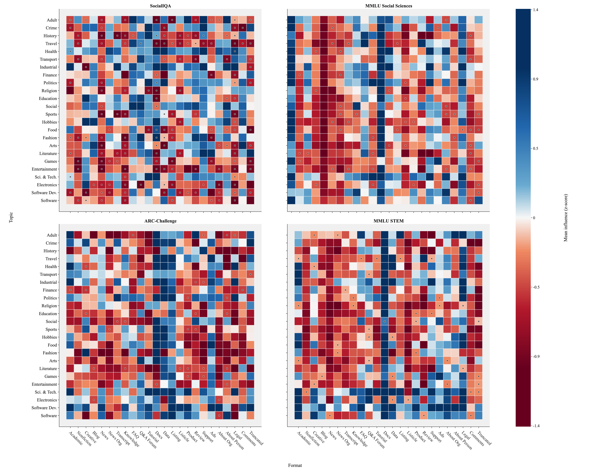
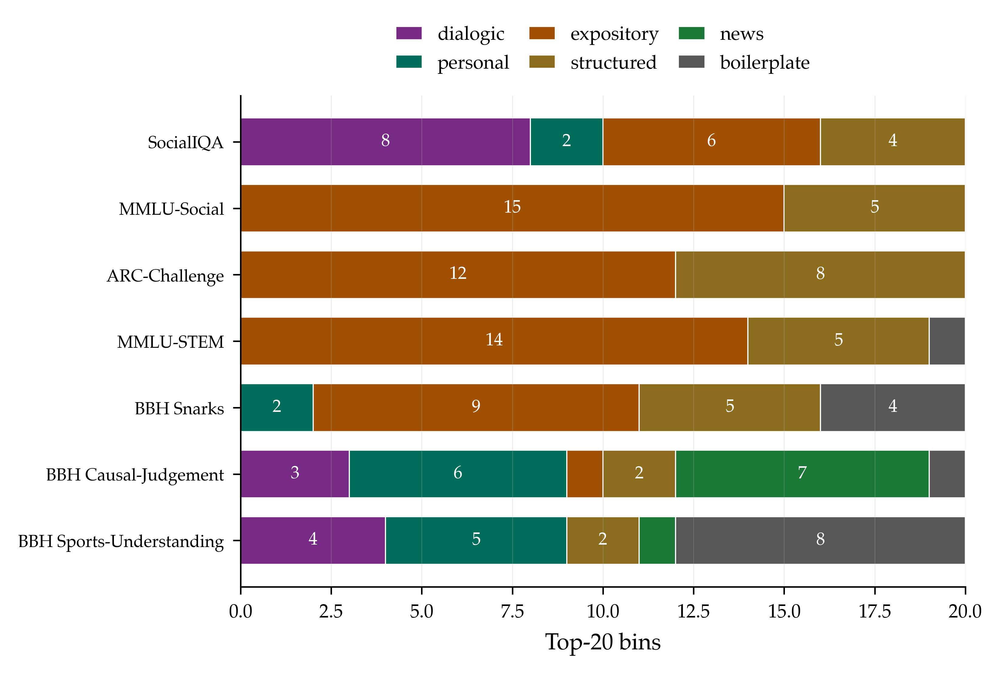
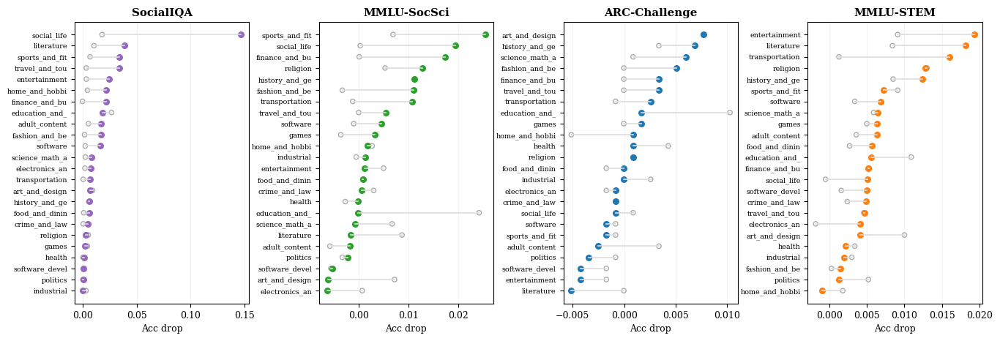

01
The whole heatmap shifts.
SocialIQA's signed influence is diffuse and heterogeneous. The other benchmarks share concentrated positive bands in documentation-like and technical regions.

Training-data attribution for capability provenance
We map social-reasoning behavior in OLMo3-7B back to named regions of Dolma3, then test whether those regions are load-bearing through targeted unlearning.
Abstract
We compute gradient-based training-data attribution with TrackStar via Bergson over a stratified 5.68M-document working set from de-duplicated Dolma3. Aggregating over WebOrganizer's 24-format by 24-topic taxonomy gives a 576 by 4 influence matrix for SocialIQA, MMLU Social Sciences, ARC-Challenge, and MMLU STEM.
The main result is structural: SocialIQA draws positive influence from diffuse, narrative, interpersonal corpus regions, while the comparison benchmarks concentrate in documentation-like and technical regions. Influence-targeted unlearning provides partial causal validation.
Main finding
Its 576-bin attribution profile correlates with each comparison benchmark at only r <= 0.22, while the other three correlate at r = 0.53 to 0.86. The separation appears at the format, topic, and exact bin levels.

Method
Four linked steps turn raw document influence into a research object that can be inspected, contrasted, and perturbed.
De-duplicate Dolma3 and classify Common Crawl plus olmOCR documents into WebOrganizer topics and formats.
Use TrackStar via Bergson to score benchmark query gradients against training-document gradients.
Average document-level scores into a signed, z-standardized 576 by 4 bin-level influence matrix.
Compare influence-guided unlearning with matched random controls to test load-bearing corpus regions.

Evidence
Influence profiles, lexical profiles, and unlearning all point to a distinct social-reasoning provenance structure.
SocialIQA's signed influence is diffuse and heterogeneous. The other benchmarks share concentrated positive bands in documentation-like and technical regions.

Top SocialIQA bins contain both dialogue-rich interpersonal text and expository or structured text. Social reasoning is not just chat data.

Influence-targeted removal degrades aligned benchmarks more than matched random controls most clearly for SocialIQA, producing a selective damage profile rather than uniform model degradation.

Artifacts
The project is organized around reproducible corpus sampling, aggregate influence matrices, and unlearning checkpoints so other researchers can audit both the attribution signal and the intervention result.
Stratified document selections for the 576-bin working set.
The aggregate 576 by 4 signed attribution surface.
LoRA adapters, merged checkpoints, and evaluation outputs.
Reproduction code for figures, profiles, contrasts, and release tables.
Citation
@article{matlin2026social,
title = {Where Does Social Reasoning Come From? Capability Provenance in Language Models},
author = {Matlin, Glenn and Chakraborty, Chandreyi and Eom, Saehee and Okamoto, Mika and
Castilla, Rayan and Jaburi, Louis and Deng, Alvin and Min, Taywon and
Quirke, Lucia and Biderman, Stella and Riedl, Mark},
journal = {arXiv preprint arXiv:2606.19625},
year = {2026}
}